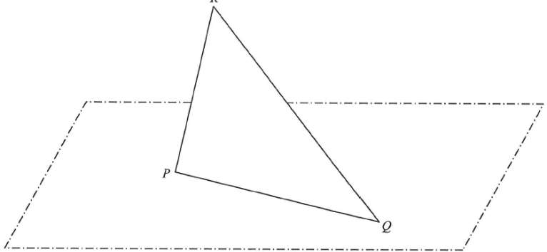

Q Question
In Figure 2, the triangular paper card \(PQR\) is held such that \(PQ\) lies on the horizontal ground.
It is given that \(PQ = 30\text{ cm}\), \(PR = 25\text{ cm}\) and \(\angle QPR = 95^\circ\).
-
(a) Find 4 marks
(i) the length of \(QR\),
(ii) \(\angle PQR\). - (b) Let \(M\) be the mid-point of \(QR\). A craftsman finds that the angle between \(PR\) and the horizontal ground is \(70^\circ\). The craftsman claims that the angle between \(PM\) and the horizontal ground exceeds \(40^\circ\). Is the claim correct? Explain your answer. 3 marks
Original Figure

a Part (a)(i) — Length of \(QR\) 1M + 1A
\(PQ = 30\) cm
\(PR = 25\) cm
\(QR \approx 40.7\) cm
\(QR^2 = 30^2+25^2-2(30)(25)\cos 95^\circ\)
Step 11M Apply the cosine rule in \(\triangle PQR\)
\[ QR^2 = PQ^2 + PR^2 - 2(PQ)(PR)\cos\angle QPR \]
Hint: The two given sides \(PQ\), \(PR\) are the ones enclosing the known angle \(\angle QPR = 95^\circ\), so the cosine rule gives the side opposite that angle — that is \(QR\).
Step 2substitution Substitute the values
\[ QR^2 = 30^2 + 25^2 - 2(30)(25)\cos 95^\circ \]
\[ QR^2 = 900 + 625 - 1500\cos 95^\circ \approx 1655.70 \]
Hint: Keep the calculator in degree mode: \(\cos 95^\circ \approx -0.08716\), so \(-1500\cos 95^\circ \approx +130.74\).
Step 31A Answer
\[ QR \approx 40.69070673 \text{ cm} \]
Answer: \(QR \approx 40.7 \text{ cm}\) (correct to 3 significant figures)
a Part (a)(ii) — Find \(\angle PQR\) 1M + 1A
\(\angle PQR \approx 37.7^\circ\)
\(95^\circ + 37.7^\circ = 132.7^\circ < 180^\circ\) ✓
Step 11M Apply the sine rule
\[ \frac{\sin\angle PQR}{PR} = \frac{\sin\angle QPR}{QR} \]
Hint: Pair each angle with the side opposite to it. \(\angle PQR\) is opposite \(PR = 25\); \(\angle QPR = 95^\circ\) is opposite \(QR\).
Step 2substitution Substitute and solve for the sine value
\[ \frac{\sin\angle PQR}{25} \approx \frac{\sin 95^\circ}{40.69070673} \]
\[ \sin\angle PQR \approx \frac{25\sin 95^\circ}{40.69070673} \approx 0.614896 \]
Hint: Use the unrounded value of \(QR\) (store it in the calculator memory) so that the final answer is accurate.
Step 3reasoning Decide between the two possible angles
\[ \angle PQR \approx 37.73809375^\circ \quad \text{or} \quad \angle PQR \approx 142.2619063^\circ \]
Hint: The sine rule gives two candidates. Since the angle sum of a triangle is \(180^\circ\):
\(95^\circ + 142.26^\circ = 237.26^\circ > 180^\circ\) → rejected; \(95^\circ + 37.74^\circ = 132.74^\circ < 180^\circ\) → accepted.
\(95^\circ + 142.26^\circ = 237.26^\circ > 180^\circ\) → rejected; \(95^\circ + 37.74^\circ = 132.74^\circ < 180^\circ\) → accepted.
Step 41A Answer
Answer: \(\angle PQR \approx 37.7^\circ\) (correct to 3 significant figures)
b Part (b) — Does the angle between \(PM\) and the horizontal ground exceed \(40^\circ\)? 1M + 1M + 1A
\(RD = 25\sin 70^\circ \approx 23.49\) cm
\(MN = \tfrac{1}{2}RD \approx 11.75\) cm
\(PM \approx 18.67\) cm
\(\angle MPN \approx 38.99^\circ\)
\(38.99^\circ < 40^\circ\) → claim NOT correct
Step 11M Find \(PM\) using the cosine rule in \(\triangle PQM\)
\[ PM^2 = PQ^2 + QM^2 - 2(PQ)(QM)\cos\angle PQR \]
\[ QM = \tfrac{1}{2}QR \approx 20.34535337 \text{ cm}, \quad \angle PQR \approx 37.73809375^\circ \]
\[ PM^2 \approx 30^2 + 20.34535337^2 - 2(30)(20.34535337)\cos 37.73809375^\circ \]
\[ PM \approx 18.66993831 \text{ cm} \]
Hint: \(M\) is the mid-point of \(QR\), so \(QM = \tfrac12 QR\). Also \(\angle PQM = \angle PQR\), which was found in part (a)(ii).
Step 21M Compare heights: relate \(MN\) to \(RD\)
Let \(D\) and \(N\) be the projections of \(R\) and \(M\) on the horizontal ground respectively.
\[ MN = \tfrac{1}{2} RD \]
\[ RD = PR\sin 70^\circ = 25\sin 70^\circ \approx 23.49230773 \text{ cm} \]
\[ MN \approx \tfrac{1}{2}(23.49230773) \approx 11.74615776 \text{ cm} \]
Hint: In the vertical plane containing \(PR\), \(RD \perp\) ground and \(\angle RPD = 70^\circ\). Because \(M\) is the mid-point of \(QR\) and both \(RD\), \(MN\) are vertical, \(MN\) is the mid-segment of \(\triangle QRD\), so \(MN = \tfrac12 RD\).
Step 3reasoning Identify the angle between \(PM\) and the ground
\[ \angle MPN \text{ is the angle between } PM \text{ and the horizontal ground.} \]
\[ \sin\angle MPN = \frac{MN}{PM} \]
Hint: \(\triangle PMN\) is right-angled at \(N\) (because \(MN\) is vertical and \(PN\) lies on the ground). So \(\angle MPN\) is exactly the angle of elevation of \(M\) from the ground.
Step 4substitution Compute \(\angle MPN\)
\[ \sin\angle MPN \approx \frac{11.74615776}{18.66993831} \approx 0.629145 \]
\[ \angle MPN \approx 38.98730493^\circ \]
Step 51A Conclusion
\[ \angle MPN \approx 38.99^\circ < 40^\circ \]
Conclusion: Since \(38.99^\circ < 40^\circ\), the angle between \(PM\) and the horizontal ground does not exceed \(40^\circ\). Therefore the craftsman's claim is not correct.
✓ Summary of Answers
- (a)(i) \(QR = \sqrt{30^2+25^2-2(30)(25)\cos 95^\circ} \approx \mathbf{40.7\text{ cm}}\)
- (a)(ii) By the sine rule, \(\sin\angle PQR = \dfrac{25\sin 95^\circ}{QR}\); rejecting \(142.3^\circ\) gives \(\angle PQR \approx \mathbf{37.7^\circ}\)
- (b) \(PM = \sqrt{30^2+\left(\tfrac{QR}{2}\right)^2 - 2(30)\left(\tfrac{QR}{2}\right)\cos\angle PQR} \approx \mathbf{18.67\text{ cm}}\)
- (b) \(MN = \tfrac12(25\sin 70^\circ) \approx 11.75\text{ cm}\), so \(\sin\angle MPN = \dfrac{MN}{PM}\) gives \(\angle MPN \approx \mathbf{38.99^\circ}\)
- (b) \(38.99^\circ < 40^\circ\) ⟹ the claim is NOT correct.